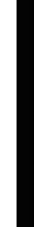
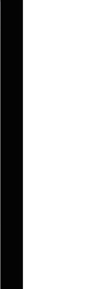
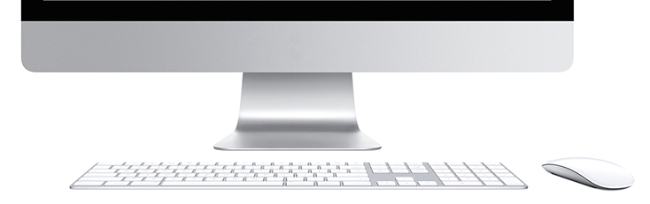
BG Mödling
www.bgmoedling-bach.ac.atDas Bundesgymnasium Mödling brauchte einen kompletten Neuanstrich und eine Vereinheitlichung ihrer Kommunikation - die beste Gelegenheit für eine Revision der bestehenden CI-Elemente, die dann generalsaniert auf allen Drucksorten und der Schul-Website den neuen Look nach außen tragen. Wie so oft bei lange gewachsenen Strukturen, galt es, den Wiedererkennungswert des Alten in einem moderneren Neuen zu erhalten und dabei den Geschmack aller Beteiligten - jung und alt - zu treffen.
Als erster Schritt wurde also ein Redesign des lange bestehenden Logos in Angriff genommen, an dem sich in weiterer Folge alles orientieren sollte.
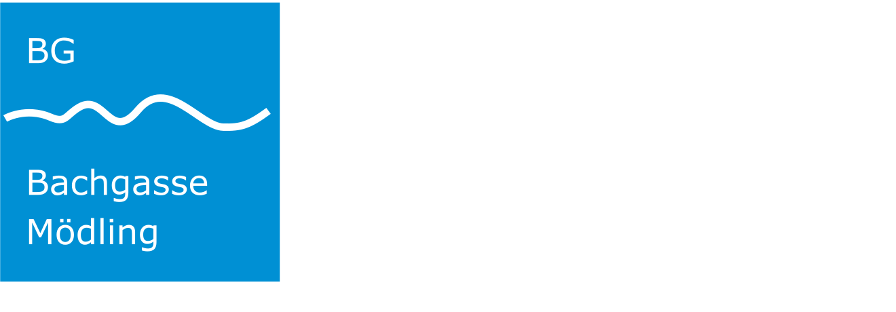
Der namensgebende Bach war das Herzstück des bestehenden Logos, symbolisiert durch die Wellenlinie. Gefasst in einem blauen Quadrat und ergänzt durch den Namen der Schule bildete es die etablierte Wortbildmarke.
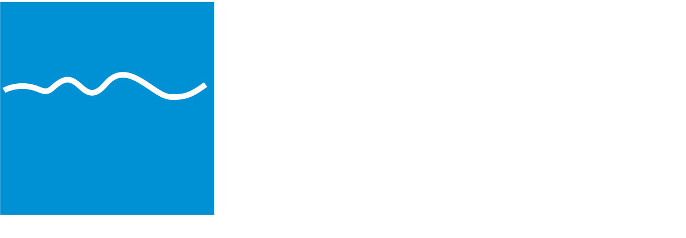
Da auch die Auswahl einer neuen CI-Schriftart noch offen stand, wurde zuerst einmal auf das eigentliche Piktogramm reduziert.
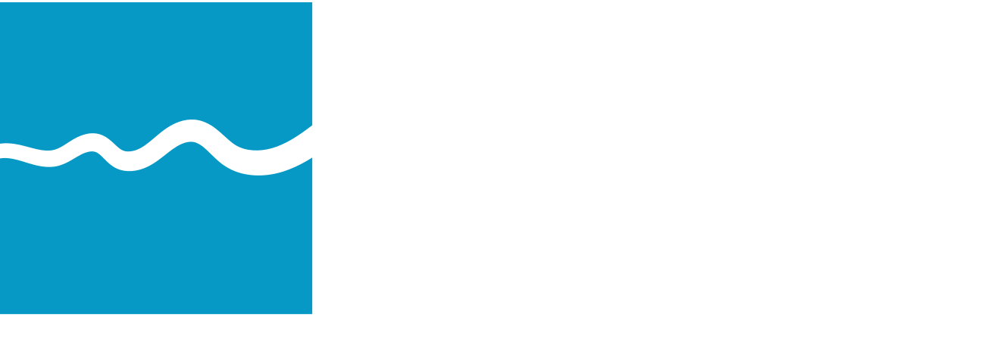
Die simple Wellenform wurde dynamischer gestaltet und in der optischen Mitte platziert. Das Farbkonzept wurde erneuert und ein frischer Blauton ausgewählt.
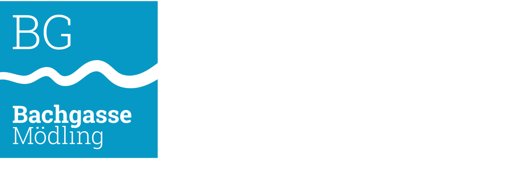
Kombiniert mit einer neuen (noch nicht finalen) Schriftart ergab sich die modernisierte Version des ursprünglichen Logos.
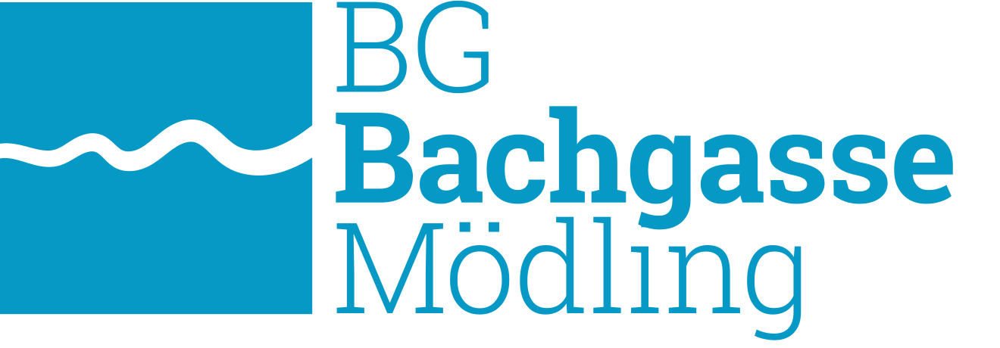
Im Zuge des Redesigns wurde klar, dass die Wortmarke besser neben dem Piktogramm stehen sollte, um auch bei kleiner Anwendung die Lesbarkeit zu gewährleisten.
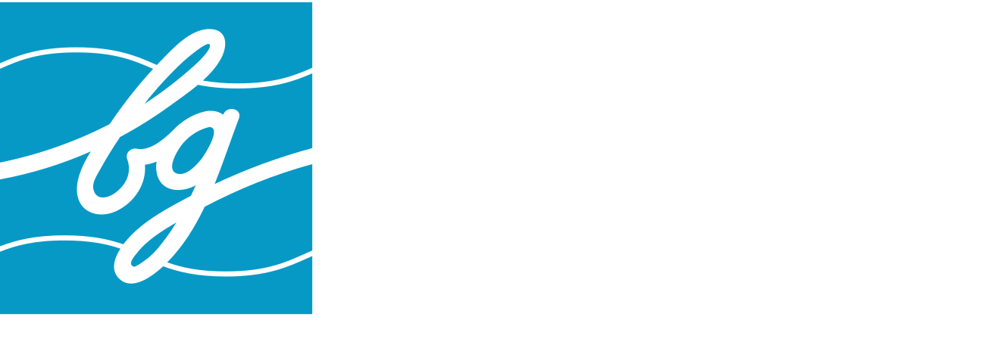
Zu diesem Zwecke musste das Piktogramm aber komplett erneuert werden, da es ohne Text sonst nicht alleine stehen könne. Das neue Piktogramm vereint die Wellenform mit dem Schriftzug 'bg' (für Bachgasse bzw. Bundesgymnasium) in Schulschreibschrift.
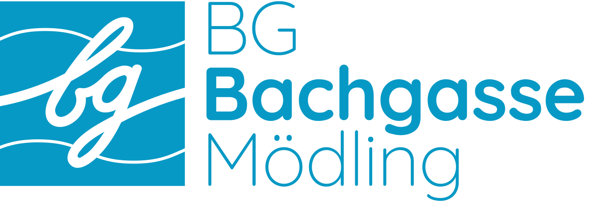
Kombiniert mit dem finalen Schriftkonzept ergibt sich das revitalisierte Logo des BG Bachgasse Mödling.
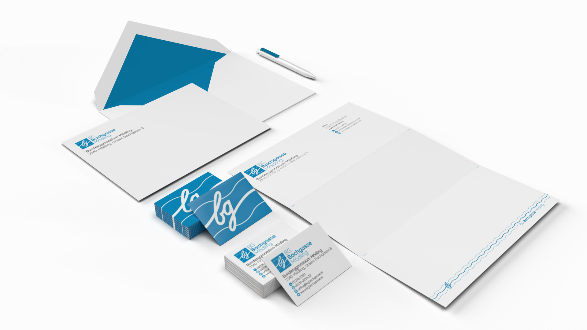
Auch die Schulwebsite des BG Mödling bekam ein optisches und funktionelles Redesign in der neuen CI, mit Fokus auf klare Navigation, Einbindung von diversen Schul-Applikationen und wochenaktuelle Kommunikation von Lehrpersonal und Schüler*innen.
